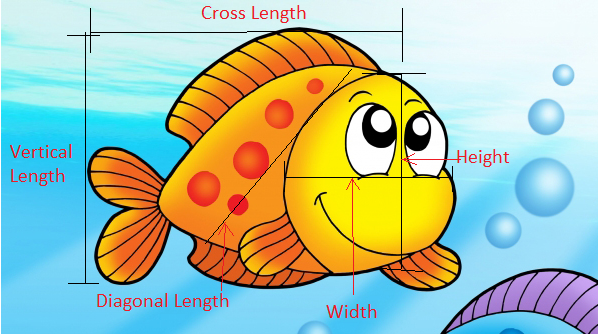

Project

The dataset
The used data set in this project composed of a record of 7 common different fish species in fish market sales. For each fish participated on this record, a certain measurements were taken, which are the fish species, the weight in Gram g, vertical length in cm, diagonal length in cm, cross length in cm, height in cm and diagonal width in cm.

The data was obtained from Kaggle website, to access the source of the data use the link below
Explanatory data analysis
In this part we are going to create a data profiling report, in this report we can get an overview of the shape and structure of our dataset by summarizing their main characters and use statistical graphics and other data visualization methods.
Based on the data profiling report, specifically in the Univariate Distribution Histogram part , We can see that there are some fishes in our data set with zero weights, we need to remove the rows where the weight equal to zero.
To access the Data Profiling Report in a new window please press the link below Link to open the data profiling report in a new window
In this part we can interactively perform further exploration to our data set.
To open the Shiny app in a new window please press the link below Link to open the Shiny app in a new window
Fitting a model to predict the fish height based on it’s cross length
Linear Regression Model
- To create a liner regression model to predict the height of a fish given its cross length, we need to determine the value of \(\beta_0\) that is the population parameter for the intercept and the value of \(\beta_1\) that is the population parameter for the slope as shown in the following model:
\[\widehat{Height}_{i} = \beta_0 + \beta_1 \times Cross Length_{i}\]
After determining the values of both \(\beta_0\) and \(\beta_1\), the updated linear regression model with the values of \(\beta_0\) and \(\beta_1\) is shown as follow:
\[\widehat{Height}_{i} = 0.87 + 0.26 \times Cross Length_{i}\]
From the above model we can see that :
- Slope: For each additional cm the fish is longer, the height is expected to be higher, on average, by 0.26 cm.
- Intercept: fish that is 8.8 cm tall (minimum cross length value among the dataset) is expected to be 3.2 cm high, on average.
The data is shown in the following plot:

The data and the least square line are shown in the following plot:

The data, the least square line and the residuales are shown in the following plot: